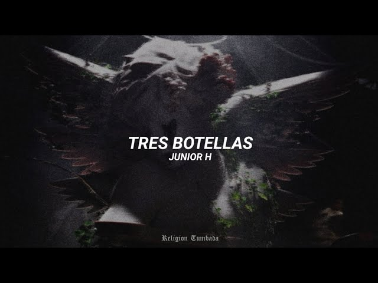

Destapé otro botecito
Porque te quiero olvidar
Este roto sentimiento
Hace rato no lo siento
Y cada vez me hace más mal
Pa curarme las heridas
Catarina con saliva
Así no siento nada
Para no llorar
Me pongo a pistear
Ya van tres botellas
Y aún quiero más
Para no pensarte
Tengo que empedarme
Pues mi corazón
Ya no puede más
No sé qué estarás pensando
Si me estarás extrañando
Y de mí te has de acordar
Por mi parte, ando pisteando
Con mujeres platicando
Pero ni así se me da
La gente me ha preguntado
Sobre ti, que qué ha pasado
Y no les quiero contestar
Para no llorar
Me pongo a pistear
Ya van tres botellas
Y aún quiero más
Para no pensarte
Tengo que empedarme
Pues mi corazón
Ya no puede más
